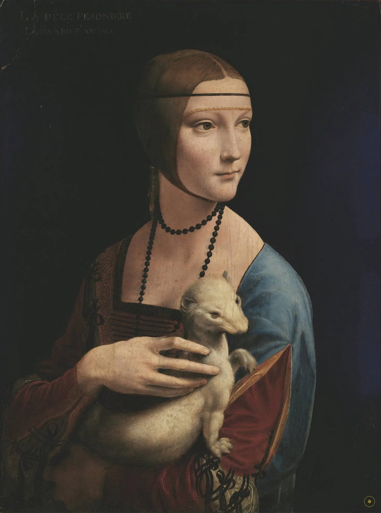
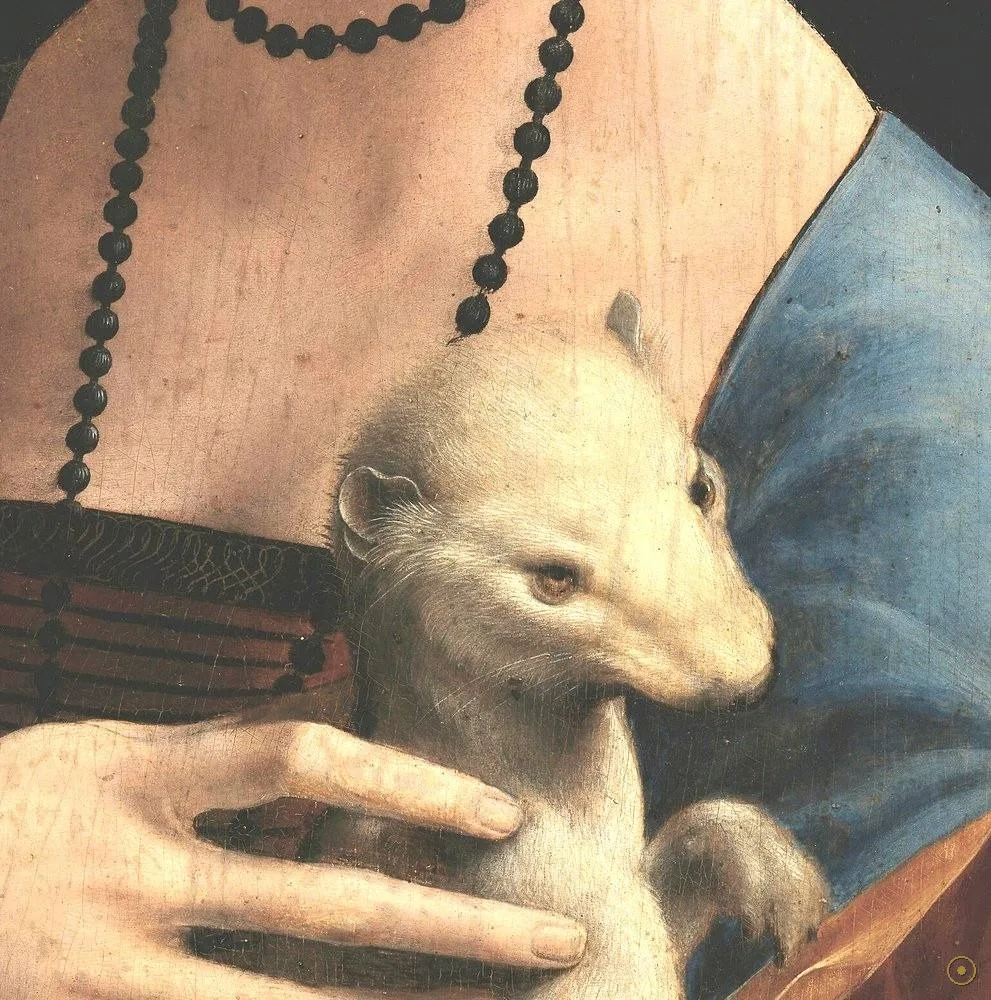
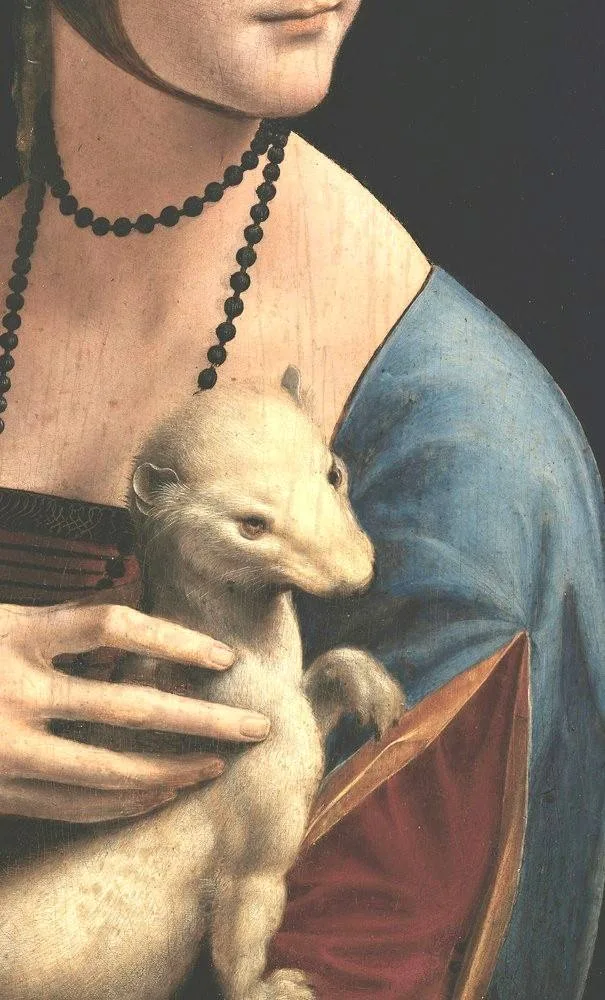
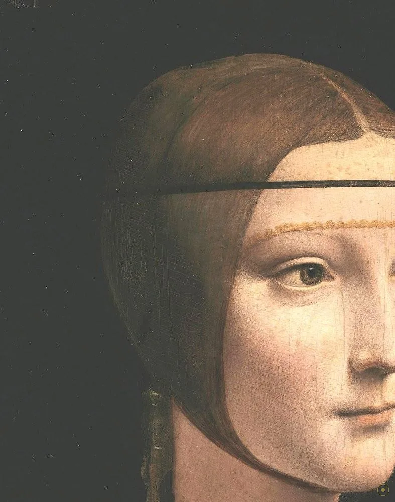
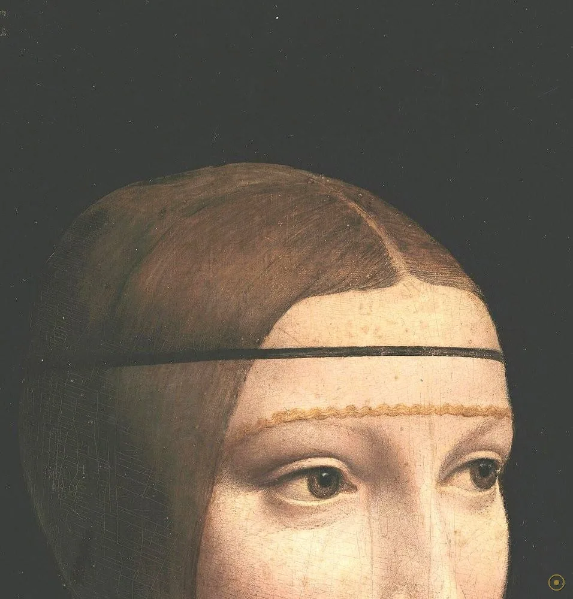
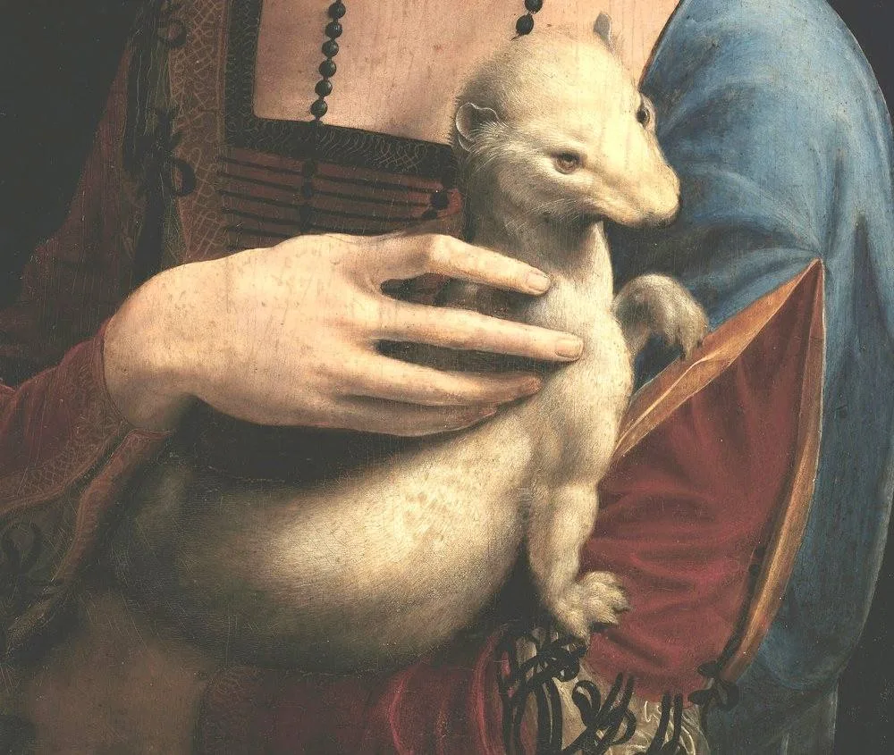
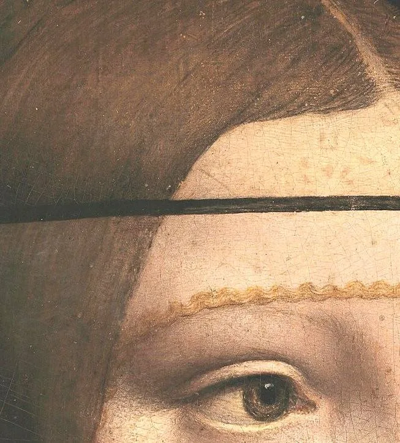
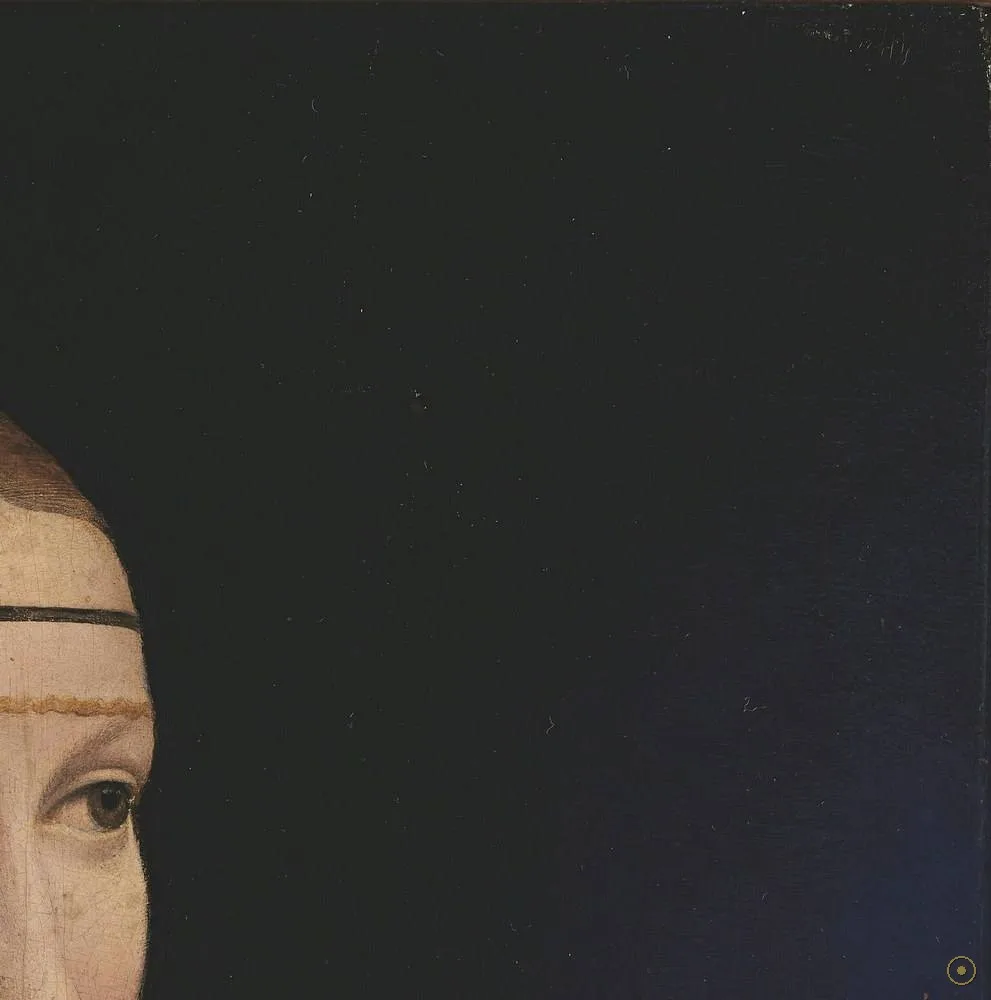

五百年来，没人能确定她到底在看谁——但这道越出画框的目光，比任何题词都更像达·芬奇的签名。
这幅画的主角是切奇莉亚·加莱拉尼（Cecilia Gallerani，约 1473–1536）：米兰公爵卢多维科·斯福尔扎（人称「摩尔人」Il Moro）年轻的情妇。约 1489–1491 年，正在卢多维科宫廷供职的达·芬奇为她画下这幅肖像。与当时流行的僵硬侧面像不同，她被画成四分之三角度、上身微微扭转，像被人唤了一声、正要回过头——一个被「打断」的瞬间。
它特殊，也因为它是一幅「被反复改写」的画。白鼬至少被画了三遍（最早的底稿更小、姿势也不同）；背景原本是带冷暖过渡的蓝灰色，十八世纪中期被整体涂黑；左上角那行潦草的「LEONARD D'AWINCI」是后人的伪签名。换句话说，你今天看到的纯净黑底与署名，没有一笔出自达·芬奇本人。它更像一个层层覆盖的「画中画」。
所以这一页不替你下结论，只带你走近：点开画面上的 ✦ 光点，去看那只被改画放大的白鼬、解剖学般精确的手、缠绕金线的头饰，以及那道越过我们的目光。留意她的眼睛——她看的根本不是你，而是画框外某个我们看不见的人。
—— 据与达·芬奇同时代诗人贝林乔尼（Bernardo Bellincioni）题咏此画的诗句转译（细节真伪有争议）
在本页左下角，可以点亮一段与画同时代的意大利文艺复兴琉特琴音乐。
从白鼬到指尖：每一处都不是装饰，而是达·芬奇写给观察者的密码。

点击画面中的 ✦ 光点 查看画面细节 · 图片来源：Wikimedia Commons（公有领域）
它画完不到一百年就离开意大利，此后数次在战争与拍卖间易手，最后以约一亿欧元归国。
约 1489–1491 · 米兰
约 1489–1491 年，达·芬奇在米兰公爵卢多维科·斯福尔扎的宫廷供职，为卢多维科年轻的情妇切奇莉亚·加莱拉尼绘制这幅肖像。它是达·芬奇仅存的四幅女子肖像之一（另三幅为《吉内薇拉·德·本奇》《美丽的费隆妮叶》《蒙娜丽莎》）。画中那只白鼬，普遍读作对卢多维科「白鼬骑士团」爵位与两人关系的双重指涉。具体委托经过无同期文献，属学界主流推论。
➤1798 → 1945 · 意大利→波兰→二战
约 1798 年，波兰亲王亚当·恰尔托雷斯基（Adam Czartoryski）在意大利购得此画，带回克拉科夫，成为恰尔托雷斯基家族藏品。二战期间，为免落入纳粹之手，画作被家族藏匿、辗转保护，战后归还波兰，长期作为波兰民族精神象征之一陈列。2016 年，波兰政府以约一亿欧元从家族手中收购，使这幅「流亡」五百年的意大利杰作正式成为国家财产。
➤2017 → 今天 · 克拉科夫
2017 年起，画作在克拉科夫国家博物馆（恰尔托雷斯基博物馆）常设展出，恒温恒湿、单独成厅，与馆藏其他珍品并列为波兰国宝。它既是达·芬奇少数存世肖像的证明，也是欧洲艺术流转史的缩影。每年数十万观众专程前来，只为在那道越过画框的目光前站一会儿。

真事一 · 白鼬被改画过。红外反射与 X 射线显示，白鼬至少经过三次绘制：最早底稿里它更小、姿态不同，最终被放大为今天这只肌肉感十足的大动物。这种「边画边改」在达·芬奇作品中常见，也解释了为何白鼬的体量几乎压过人物本身——它早已不只是宠物，而是被反复推敲的视觉论点。
真事二 · 背景与签名都是后世手笔。科学检测证实背景原为蓝灰色，十八世纪中期被整体涂黑；同一时期有人在左上角添了拼写错误的伪签名「LEONARD D'AWINCI」。换句话说，今天我们所见的「纯黑底＋署名」，没有一笔出自达·芬奇本人。修复者选择保留这层黑，让篡改本身成为历史证据。
真事三 · 木板、银针与指纹。画作绘于约 4–5 毫米厚的胡桃木板上；检测发现画面下有银针打稿（spolvero）的转移痕迹，以及达·芬奇本人的指纹。更巧的是，这块胡桃木与《美丽的费隆妮叶》取自同一棵树——两幅米兰时期的肖像，连木纹都是同源的。
※ 委托经过、白鼬层数、怀孕说与贝林乔尼题咏的关联多为学界主流推论或据文献转述，存在争议；引文据英译转译，措辞或因译本而异。
把画面拆开看：每一处细节都在替达·芬奇回答同一个问题——怎样让一个人「活」在木板上。

三重绘制痕迹，最终放大成压倒人物的主角；金线之外的唯一暖色对手。

四分之三角度与晕涂，把静态肖像变成正在发生的瞬间。
拉长舒展的手指与隆起的肌腱，泄露画家首先是个解剖学家。

未婚贵族女子的时髦发式，暗底里唯一的细微暖光。

无纹章无珠宝的深色长裙，地位微妙者的政治表达。

越过观者落向画框外的人，把肖像变成关系的现场。

原是蓝灰，18 世纪中被整体涂黑——可见的黑底其实是篡改。
左上角拼写错误的「LEONARD D'AWINCI」，断代的旁证而非荣耀。
达·芬奇用 sfumato（烟熏般柔化明暗交界）取代了早期绘画硬朗的轮廓线。脸、颈、手的体积不靠勾线，而靠数十层极薄罩染的累积。这种「看不出笔触」在 1490 年的米兰近乎异端——同代波提切利仍在线条里造型。正是这种反主流，让肖像第一次获得了「皮肤会呼吸」的错觉。
与佛罗伦萨市民阶层的清醒肖像不同，米兰斯福尔扎宫廷的肖像更重姿态、服饰与政治隐喻。达·芬奇在米兰的十余年（约 1482–1499）让他远离故乡的线描传统，转向更戏剧化、更注重「动态与心理」的画法。这幅画正是这一转向的起点。
它绝大部分时间不在意大利：1798 年后去了波兰，历经割据、亡国与两次世界大战，被藏匿、被追索、最终被国家收购。它的命运与波兰的民族叙事交织，使它在艺术史之外，成了一件政治文物——评价它，不能只谈技法。
被中断的转身、越过画框的目光、难以读解的微笑、交叠而精确的手——这些后来定义《蒙娜丽莎》（约 1503 起）的母题，在这幅早约十五年的肖像里已几乎齐备。可以说，达·芬奇的「肖像公式」，在抱银鼠的女子身上已经写就。
达·芬奇于米兰公爵宫廷绘成，油彩胡桃木板，主角为卢多维科之情妇切奇莉亚·加莱拉尼。
波兰亲王亚当·恰尔托雷斯基购于意大利，携回克拉科夫，入恰尔托雷斯基家族收藏。
背景被涂黑、左上角添伪签名——画面今日所见的纯黑底出自后世之手。
二战中家族藏匿保护，战后归还波兰，成为民族精神象征之一。
波兰政府以约一亿欧元收购并常设展出，列为国宝，单独成厅。